Define and review a transient heat study
Use the following process to define and review a transient heat transfer study, which is a type of thermal study that analyzes heat flow due to temperature differences over a period of time, before the study reaches a steady state. Transient heat studies allow design engineers to see temperature changes, from initial state to saturated state, and to assess heating and cooling performance based on results taken at specific time intervals. Based on your material and design, you can answer questions such as how long a component will take to heat, or how much time is needed for it to cool from a working temperature. You can also find the point at which there is a dramatic change in temperature.
The objective of this transient heat study is to identify the maximum temperature of the break rotor over time, and to verify that thermal stresses do not exceed operational maximum temperature for the part.
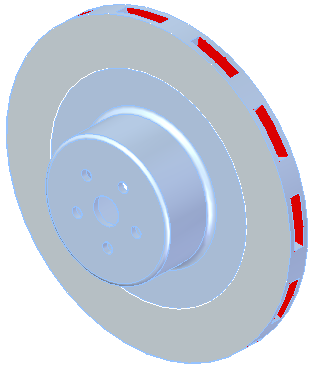
If you find that you need to mitigate thermal stress, you can edit the model to change the shape or thickness of different elements.
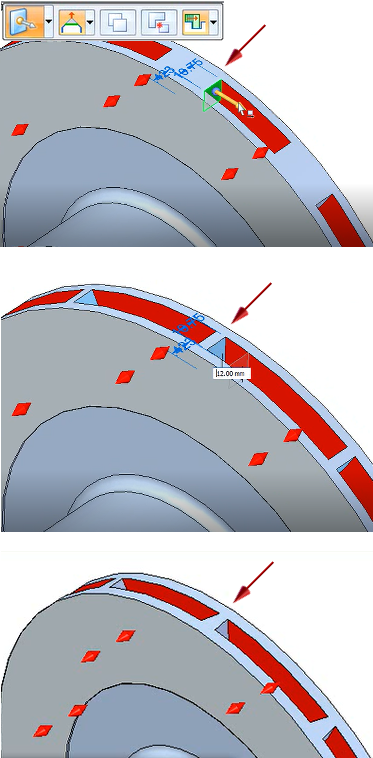
Before beginning, verify that material property values for Thermal Conductivity, Density, and Specific Heat are defined for the materials used in your model. To open the Material Table dialog box to verify this:
-
In a part model, double-click the Material node in the Simulation pane.
-
In an assembly, choose Simulation tab→Study group→Material Table
 .
.
Create the study.
-
In the Create Study dialog box, from the Study type list, select Transient Heat Transfer.
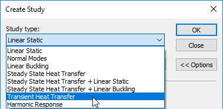
Note:Transient heat transfer studies require an advanced simulation license.
The Transient Heat Options dialog box is displayed.
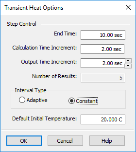
-
In the Transient Heat Options dialog box, define the study processing parameters. Press Tab to enter each value and move to the next field.
-
End Time—Enter the total time that you want the analysis to run. The default units are seconds. You can convert a value from a known number of minutes to seconds by typing min after the value, and then pressing Tab. The maximum value is 100,000,000.00 seconds.
-
Calculation Time Increment—Specify how often you want the system to calculate thermal results. Use a value that is sufficiently small, so that the results are linear over the time step interval. This value must be greater than zero and less than the end time. You can use the default value initially, and then adjust it based on the results.
Tip:For guidance based on your geometry mesh size, refer to the NX Nastran equation for estimating the time step.
-
Output Time Increment—Specify at what time increment in the process you want to begin generating plots. You can use the arrow controls or type a value. Adjusting this value directly affects the number of results. This value must be greater than or equal to the calculation time increment, and less than the end time.
-
Number of Results—Results are generated until the study end time is reached. If you choose the constant interval type, then this read-only field shows how many result sets will be produced based on your current input values, plus one more plot as the baseline. If you choose the adaptive interval type, then the number of results is determined during processing.
-
Interval Type—Choose one of the following methods for calculating the intervals at which results are produced.
-
The Constant option is the default interval type. Use this option if it is important to obtain the number of results shown in the Number of Results box. The number is calculated automatically based on the formula:
Number of Results=(End Time)/(Output Time Increment)+1, where +1 represents the baseline result plots at Increment 1, 0 seconds.Example:-
If End Time=100 sec
Output Time Increment=25
Interval Type=Constant,
then result sets are produced at these intervals:
Number of Result Sets =100/25+1=5
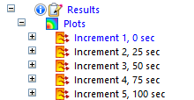
-
-
Choose the Adaptive option to allow flexible calculation of transient heat step intervals during processing. This means that there may be more or fewer result sets produced than is currently indicated. During high change, the step interval is low, and during steady change, the interval is larger. Another advantage of using the adaptive time step algorithm is the potential for significantly reduced processing times for large files.
Example:-
If End Time=5000 sec
Output Time Increment=200
Interval Type=Adaptive,
then result sets are produced at irregular intervals. In this case, only four result sets, plus the baseline plot, were generated:
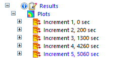
-
-
-
Default Initial Temperature—Assign a single temperature to all of the geometry included in the study. Subsequent temperatures are calculated from this starting point. This value is required to define the starting temperature that is applied to all of the bodies included in the thermal study.
Tip:To change the default initial temperature after the study is initiated, you must edit the Simulation pane→Loads group→Body Temperature load value.
Example:The following values were used for the initial simulation of this brake rotor part.
-
-
Click OK to close the Transient Heat Options dialog box and return to the Create Study dialog box.
-
In the Create Study dialog box, continue by doing the following:
-
From the Mesh type list, select the appropriate the mesh type.
-
In the Results Options section, under Elemental Results, click Heat Flux. Temperature result plots are produced by default. Selecting this check box adds heat flux plots to each set of results.
-
If you are defining a study for an assembly, you can automatically create the connectors needed for meshing and solving based on the assembly mate relationships. Select the appropriate options in the Connector Options section of the Create Study dialog box. For more information, see Assembly connectors.
-
Click OK to initiate the transient heat study.
-
-
Identify the study geometry—A part or sheet metal model with one body is selected automatically as the study geometry. For an assembly or a multibody part model, select the study geometry using the Define command.
For this brake rotor part model, the geometry was selected automatically.
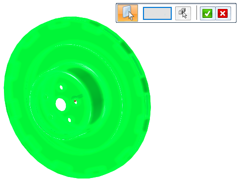
Apply thermal boundary conditions.
Temperature differentials occur when heat is transferred by conduction (through a solid body), by convection (between a body and a liquid or gas), or by radiation (electromagnetic waves). Use the commands in the Thermal Loads group on the ribbon to define the heat transfer mechanisms (the boundary conditions) for your model. These commands act as both loads and constraints in thermal studies.
The next few steps provide examples of how you can combine thermal loads to define the starting temperature, the heat source, and how heat is dissipated. The specific commands you choose for your model depend on the file type (part, sheet metal, or assembly), where you want to apply the load (entire bodies or selected entities), and how the model is intended to operate.
To create a variable thermal load with respect to the transient heat study end time, you can select the Create Function button on the command bar, and then define a time versus factor table. The function is applied automatically when the study is solved. For more information, see Use a function as variable input to loads.
-
Notice that a Body Temperature load
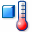
was added automatically to the Simulation pane→Loads group when you initiated the study. The body temperature is the default initial temperature value you entered in the Transient Heat Options dialog box.Note:A body temperature load is required to assign a default initial temperature as a starting point for all of the geometry in a transient heat study. The initial temperature to the end of the study is considered ambient heating and cooling.
To edit an existing body temperature, double-click the Body Loads group→Body Temperature entry in the Simulation pane.
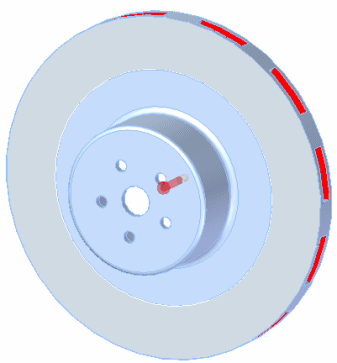
-
Apply a thermal load to define the source of the heat. There are three basic mechanisms for specifying heat flow in a heat transfer study: conduction (Heat Flux or Heat Generation commands), convection (Convection command), and radiation (Radiation command).
-
Use the Heat Flux command
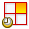
to define heat conducted within a solid or between a solid and a liquid or gas. You can apply it to a face, curve, edge, node, or point. For more information, see Heat Flux loads. -
Use the Heat Generation command to apply heat transfer to entire bodies or components in an assembly. For more information, see Heat Generation loads.
Example:Heat is generated by friction on the brake pad. To define this, select the Heat Flux command , and apply a heat flux load to the brake pad surfaces on both sides of the rotor. Assign a value of 1200 W.
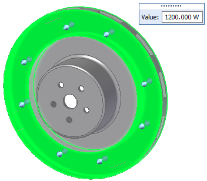
-
-
Apply a thermal load to specify how heat is removed. Use the Convection command to define how heat is transferred naturally from one surface to another surface or to its surroundings due to a temperature differential.
Example:To define how heat is transferred from the rotor to surrounding air, select the Convection command
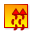
.Apply a convection load to all of the surfaces of the rotor except the brake pad surfaces. Assign a natural convection film coefficient value of 22.000 W/m^2-K and an ambient temperature of 20.000 C.
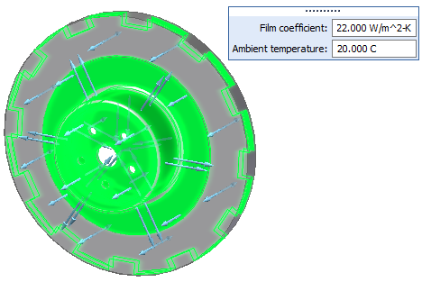
-
Mesh and solve the study.
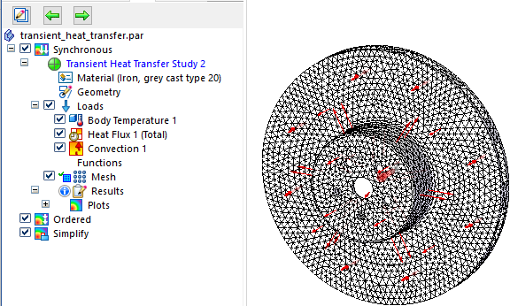
Note:If a message is displayed stating that you are solving a transient heat transfer study without explicitly applying a body temperature, you are prompted to accept the default body temperature. If this value is acceptable, click Yes to process the study. You can cancel and change this value using the Body Temperature command.
Review transient heat study results.
When the study is solved, the results are shown in the Simulation Results environment. The temperature plot in the last result set is displayed. Compare the Color Bar color-coding and values to the temperatures shown in the temperature and heat flux plots. You can use this information to quickly determine whether the part meets the maximum temperature requirements set by your company.
After you identify areas of maximum temperature or heat flow, you can use the Probe Table to locate and graph the values at specific nodes. You also can save all of the study inputs, study data, plots, graphs, and your conclusions in HTML or Word format.
-
Display the result plot for the output increment that shows the areas of highest temperature. You can do this using the lists in the Home tab→Data Selection group.
-
Use the Result Mode list to choose a specific results increment, or use the arrows to cycle through each plot produced at each time interval.
-
From the Result Type list, choose Temperature or Heat Flux.
-
From the Result Component list, choose the specific result plot.
Example: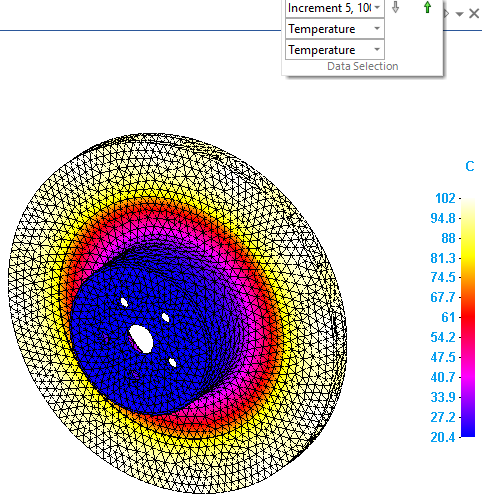
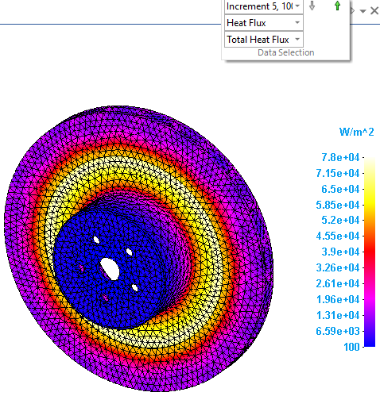
You also can display these plots using the Simulation pane. Expand the Results→Plots→Increment sets to view each temperature and heat flux plot produced at the specified time intervals. The result plot that is currently displayed is identified in blue text in the Simulation pane. If a plot is listed in black or gray text, you can double-click it to display it.
-
-
Graph temperature values at specific times, and save the graphs.
-
When the result plot with the temperature areas you want to investigate is displayed in the graphics window, select the Home tab→Probe group→Probe command.
The Probe Table is opened.
-
Using the Color Bar colors as a guide, click a node in the plot window, and then click again to place the data label. Repeat this for the nodes of interest.
For each node, a white probe label is displayed in the simulation results, and a row of nodal analysis data (temperature and node location) is added to the table.
-
In the Probe Table, select up to 10 data cells.
-
Select the Show Graph button to show the stress data in graphical form.

Probe labels matching each of the selected nodes are displayed in the simulation results, color-coded to match the data in the graph.

-
Before you close the graph window, click the Save Graph button.
You can access saved transient heat graphs as you do plots using shortcut commands from the Simulation pane→Results→Graphs node. This also saves the graph for review in the Simulation Report.
Tip:For more information, see the following help topics: Display node analysis data and Graph nodal analysis results.
-
-
Select the Home tab→Output Results group→Create Report command
 to create a report of all of the simulation results.
to create a report of all of the simulation results. This saves the study analysis parameters, the values used to define the thermal boundary conditions, the resulting temperature and heat flux result plots, and any Time vs. Temperature graphs you explicitly saved to the simulation results file (.ssd file). It also includes your conclusions for review by others.
Tip:You can share this report with others using the Solid Edge Portal.
Modify a transient heat study to improve the results
After reviewing the study results, you may decide to change one or more transient heat transfer study input values and reprocess the study.
-
Close the Simulation Results environment.
-
Right-click the study name in the Simulation pane and select Modify Study.
-
In the Modify Study dialog box, click the Transient Heat Options... button to access the Transient Heat Options dialog box. (When you created the study, this dialog box was displayed automatically.)
-
Now you can adjust the study input values.
-
To generate a graph that shows that temperatures have reached a nearly steady state, you can change the End Time (the length of time the study runs).
-
To maintain a useful temperature distribution of node values along the curve, you can experiment with changes to the Calculation Time Increment and the Output Time Increment.
-
-
Right-click the study name and choose Solve to evaluate the changes.
Here is a nodal analysis graph for a node from the initial simulation, with an End Time of 100 seconds:

The results begin to show the temperature leveling off by extending the study length (the End Time) to 1000 seconds.
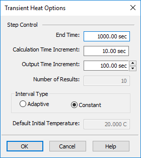

By increasing the study length to 5000 seconds, the graph now shows the time increments at which the temperature values are changing, as well as when a steady state temperature is reached. You can change the time increment values to change how often results are calculated and how often results are output.
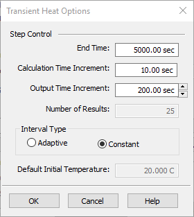

How do I
Verify simulation material propertiesCreate a study
Create a study using a simplified model
Define a coupled study for thermal stress analysis
Assign units in studies
Define a harmonic frequency response study
Learn more
Creating and using studiesUsing materials in studies
Modifying studies
Structural studies
Thermal studies
Using steady state heat transfer studies
Coupled studies
Harmonic response studies
Create and solve a study using GD optimized model
Create and solve a study using an STL model
Defining thermal studies
Look up more details
Create Study (or Modify Study) dialog boxTransient Heat Options dialog box
Options: Harmonic Frequency Analysis dialog box